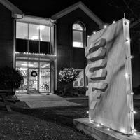

Thanks for visiting our website!
Alumni Spotlight
Opportunities to Give
- $25 a month – small group & bible study materials
- $50 a month – fresh baked cinnamon rolls
- $75 a month – Café Desserts for a week
- $200 a month – Trivia Lunch for a week
- $400 a month – Feeding Frenzy for a week
- $300 a month – An intern for a month
Current Needs
Feeding Frenzy
Every Thursday night before Bible Study, GT CCF offers its students a free dinner called “Feeding Frenzy” beginning at 6:30pm. About 400 students normally attend Feeding Frenzy. Your group can bring food that is already prepared (fast food, barbeque, sub sandwiches, etc.) or use our kitchen to cook dinner here. Student favorites include lasagna, burritos, barbeque sandwiches, and grilled cheese sandwiches and soup. You can sponsor a Feeding Frenzy by either providing food or providing a donation of $400.00.
Devo Lunch
Each Monday, students gather for devotional lunch, or “devo” lunch, which includes a free lunch and a short. We offer two sessions of devo lunch at 11am and 12pm every Monday. About 200 students (an average of 100 students per session) attend devo lunch each week. This is especially effective in allowing students to invite their friends from class to come by CCF for a free lunch. You can sponsor both lunches ($400), one lunch ($200), or partially support a devo lunch.
Adopt-A-Van
GTCCF attends four retreats every school year, one of which is held at Panama City Beach, Florida. For this retreat, we rent 15 person passenger vans to ensure safe travel for our staff and students. CCF subsidizes the cost of the vans to make the retreats affordable to students, so this is a definite need in order to make these trips feasible. The vans cost $500 each for three days, and we usually rent 15-18 vans per retreat. You may also choose to “purchase” a van for the retreat for $500.00, a bench for $125.00, or a seat for $50.00.
How to Give
Please contact Ashley (Hightower) Teffeau with any questions concerning giving at ashleyccf@gmail.com.
Our greatest need is monthly operational giving. Our operational budget funds all of the free meals, programs, events, staffing, campus, and everything else needed to fulfill our mission.
One–Time Gifts and Gifts-In-Kind are also needed to help GTCCF reach out to students. Please see below some various current one time needs or contact Ashley with any additional needs.
Stock Gifts are also accepted and sold immediately after the transfer is made. By selling the stocks it allows the donor to donate the amount they intended to and will go directly to the ministry for use.
To give to GTCCF we have various methods of payment: autodraft, PayPal, and checks.
Auto Draft Form – Download the form to begin autodraft. It is our most common giving method for monthly givers. You can set automatic withdrawls for free by filling out the form and sending it in by snail mail or making the approprioate edits to the form and attaching it in an email to Ashley.

PayPal Secure Payment – You can also donate to CCF via Paypal. Please consider the fee when giving.
Checks - Checks should be made payable to “GTCCF” with the budget/cause indicated in the memo line.
Please send all checks to:
Checks - Checks should be made payable to “GTCCF” with the budget/cause indicated in the memo line.
Please send all checks to:
GTCCF
PO Box 93662
Atlanta, GA 30377
PO Box 93662
Atlanta, GA 30377
Please send all Gifts-In-Kind/Shipments to:
GTCCF
767 Techwood Drive
Atlanta, GA 30313
767 Techwood Drive
Atlanta, GA 30313